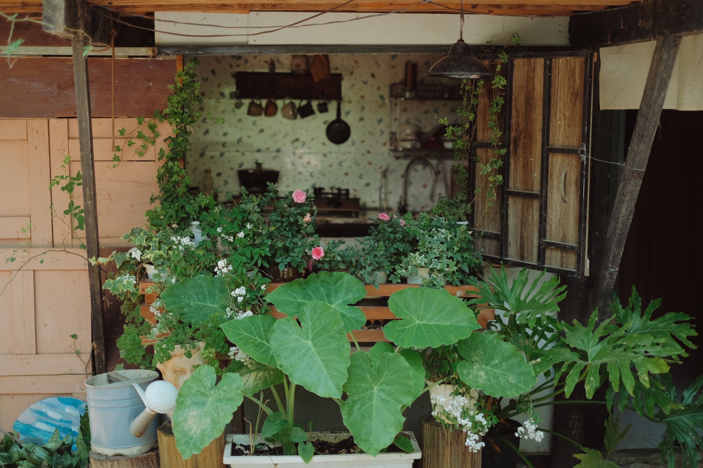
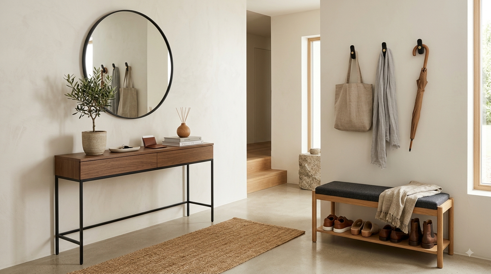

En este artículo
Introducción
Descubre cómo hacer que una casa pequeña parezca más grande mediante luz, color, distribución, espejos, orden y muebles proporcionados.
Antes de empezar, conviene observar las condiciones reales de la vivienda y definir qué problema quieres resolver. Las soluciones más efectivas suelen combinar planificación, mantenimiento y decisiones proporcionadas, en lugar de depender de un único truco.
En esta guía encontrarás un método práctico para avanzar paso a paso, con criterios que puedes adaptar al tamaño de tu casa, presupuesto y rutina. La prioridad es mejorar el espacio sin crear nuevos problemas de seguridad, limpieza o mantenimiento.
Haz cambios graduales y evalúa el resultado. Cuando una intervención implica instalaciones, estructuras o trabajos especializados, consulta a un profesional cualificado antes de modificar elementos que puedan afectar la vivienda.
Aprovechar la luz y el color para ampliar visualmente
La luz es uno de los recursos más eficaces para modificar la percepción de una habitación sin cambiar sus metros cuadrados. Un espacio bien iluminado permite distinguir mejor los límites, reduce las zonas oscuras y hace que paredes y muebles se perciban con mayor ligereza. Antes de comprar decoración nueva, observa qué ventanas aportan más claridad, qué objetos bloquean esa entrada y en qué horas la vivienda recibe luz natural.
Evita cubrir completamente las ventanas con muebles altos, plantas voluminosas o cortinas demasiado pesadas si no necesitas ese nivel de oscuridad. Los tejidos ligeros permiten mantener privacidad y aprovechar claridad durante el día. Cuando una habitación tiene poca luz natural, distribuye varios puntos de iluminación artificial en lugar de depender únicamente de una lámpara central, porque las esquinas oscuras pueden hacer que el espacio parezca más cerrado.
Los colores claros reflejan una mayor cantidad de luz y suelen ayudar a crear continuidad visual. Blanco roto, beige suave, gris claro y tonos naturales pueden funcionar bien, pero no es obligatorio pintar toda la casa de blanco. Una paleta coherente con pocos cambios bruscos entre paredes, carpinterías y muebles ayuda a que la mirada recorra el espacio sin interrupciones.
También puedes utilizar un color más profundo de forma controlada para dar profundidad a una pared concreta, siempre que exista suficiente iluminación y el resto de la composición mantenga equilibrio. La clave no está en evitar los tonos oscuros por completo, sino en entender cuánto peso visual añaden y dónde conviene utilizarlos.
El techo merece atención. Mantenerlo claro y evitar elementos demasiado voluminosos puede reforzar la sensación de altura. Si utilizas lámparas colgantes, comprueba que su escala sea adecuada y que no interfieran con recorridos. En zonas de paso estrechas, plafones o luminarias compactas suelen liberar más campo visual.

Por la noche, combina iluminación general, ambiental y puntual. Una lámpara de pie en una esquina, luz bajo un mueble o apliques correctamente ubicados pueden crear capas y profundidad. Evita iluminar cada zona con la misma intensidad; un ambiente con diferentes niveles de luz resulta más natural y puede hacer que la habitación se perciba más rica y amplia.
Consejo práctico
Observa el resultado durante varios días antes de realizar nuevos cambios. Ajustar una decisión cada vez permite identificar qué funciona realmente en tu espacio y evita gastos o intervenciones innecesarias.
Elegir muebles y distribuirlos con proporción
En una casa pequeña, el tamaño de los muebles importa tanto como su estilo. Un sofá enorme puede ser cómodo, pero si obliga a rodearlo constantemente o bloquea una puerta, la habitación se sentirá más pequeña. Mide paredes, puertas, ventanas y recorridos antes de comprar. Marca en el suelo las dimensiones de las piezas principales con cinta removible para comprobar cuánto espacio libre quedará.
No es necesario utilizar muebles diminutos. Muchas piezas pequeñas pueden producir más ruido visual que unas pocas de tamaño medio bien elegidas. Prioriza lo esencial: un sofá proporcionado, una mesa adecuada al número habitual de personas y almacenamiento suficiente. Después añade elementos secundarios únicamente si resuelven una necesidad real.
Los muebles con patas visibles dejan ver parte del suelo y generan una sensación de ligereza. Esto puede funcionar en sofás, aparadores y mesillas. Sin embargo, el criterio principal debe seguir siendo la funcionalidad. Un mueble cerrado hasta el suelo puede ser mejor si ofrece almacenamiento valioso y evita tener objetos a la vista.
Deja recorridos claros. Las zonas de circulación no deben convertirse en espacios residuales entre muebles. Si cada desplazamiento exige mover una silla o girar alrededor de una mesa, la distribución necesita ajustes. En salones pequeños, separar ligeramente el sofá de la pared puede incluso mejorar la composición si existe espacio suficiente y el paso queda definido.
Los muebles multifuncionales son útiles cuando su segunda función se utiliza de verdad. Un banco con almacenamiento, una mesa extensible o una cama con cajones pueden reducir la necesidad de piezas adicionales. Evita mecanismos complicados que terminen sin usarse; la transformación debe ser sencilla y resistente.
Finalmente, revisa la altura. Estanterías altas aprovechan superficie vertical, pero conviene mantener algunas zonas despejadas para que las paredes respiren. Combinar almacenamiento alto en puntos concretos con muebles bajos en otras áreas evita que toda la habitación quede rodeada por volúmenes pesados.
Consejo práctico
Observa el resultado durante varios días antes de realizar nuevos cambios. Ajustar una decisión cada vez permite identificar qué funciona realmente en tu espacio y evita gastos o intervenciones innecesarias.

Usar espejos, orden y continuidad visual sin recargar
Los espejos pueden multiplicar la luz y crear profundidad, pero su ubicación debe planificarse. Colocar uno frente a una ventana puede reflejar claridad y vistas agradables. Antes de fijarlo, comprueba exactamente qué aparecerá reflejado; duplicar una zona desordenada no mejora la sensación de amplitud.
Un espejo grande suele generar un efecto más limpio que muchos pequeños repartidos sin criterio. En pasillos o recibidores, una pieza vertical puede reforzar altura. En el comedor, un espejo horizontal puede ampliar visualmente la pared. Asegúralo correctamente según su peso y el tipo de soporte.
El orden cotidiano tiene un impacto enorme. Superficies llenas de objetos reducen el espacio visual disponible. Esto no significa vivir sin decoración, sino seleccionar qué merece estar expuesto. Agrupa algunos objetos en composiciones y guarda el resto. Dejar zonas libres en mesas, encimeras y estantes permite que cada elemento destaque mejor.
Utiliza almacenamiento cerrado para categorías que generan mucho ruido visual: cables, documentos, productos de limpieza, juguetes o pequeños accesorios. Cestas y cajas funcionan mejor cuando tienen una función definida y no se convierten en lugares donde esconder objetos sin clasificación.
La continuidad del suelo también influye. Utilizar el mismo pavimento o materiales visualmente relacionados entre zonas conectadas reduce cortes. Las alfombras deben tener un tamaño suficiente para relacionar los muebles; una alfombra demasiado pequeña puede fragmentar el salón y hacer que cada pieza parezca aislada.
Revisa la casa cada pocos meses. A medida que se acumulan compras, regalos y objetos cotidianos, la sensación de amplitud puede desaparecer. Donar, vender o reubicar lo que ya no utilizas es una estrategia más efectiva que comprar nuevos organizadores para guardar cosas innecesarias.
Consejo práctico
Observa el resultado durante varios días antes de realizar nuevos cambios. Ajustar una decisión cada vez permite identificar qué funciona realmente en tu espacio y evita gastos o intervenciones innecesarias.
Otro recurso útil es trabajar con líneas visuales. Cortinas instaladas cerca del techo y que llegan casi hasta el suelo pueden reforzar la altura, siempre que no arrastren ni interfieran con radiadores. Estanterías verticales estrechas también dirigen la mirada hacia arriba. En cambio, demasiadas franjas horizontales, muebles de alturas muy distintas y cuadros colocados sin relación pueden fragmentar una pared pequeña.
Las puertas y zonas de transición merecen revisión. Si una puerta abierta bloquea constantemente una pared útil, puede ser conveniente estudiar otra solución durante una reforma, pero cualquier cambio debe respetar instalaciones y normativa. Sin hacer obra, mantener despejado el entorno de las puertas ya mejora la continuidad entre habitaciones y permite que la luz circule.

En cocinas pequeñas, libera la encimera de electrodomésticos que utilizas pocas veces. Aprovecha armarios hasta una altura accesible y organiza por frecuencia de uso. Los frentes relativamente uniformes reducen ruido visual. Si existen estantes abiertos, limita la cantidad de objetos y agrupa vajilla o recipientes por función.
En dormitorios, la cama suele ser la pieza dominante. Evita añadir muebles secundarios si no existe paso suficiente. Mesillas estrechas, apliques de pared y almacenamiento bajo la cama pueden liberar superficie. Un armario bien organizado ofrece más sensación de amplitud que varias cómodas pequeñas repartidas por la habitación.
Los cuadros y fotografías también pueden ayudar. Una composición grande y ordenada suele verse más limpia que decenas de marcos pequeños sin alineación. Coloca las obras a una altura coherente con los muebles y evita cubrir todas las paredes. El espacio vacío alrededor forma parte de la decoración.
Antes de comprar soluciones de almacenamiento, clasifica tus pertenencias. Medir el volumen real permite elegir armarios y cajas adecuados. Comprar organizadores sin eliminar objetos innecesarios solo traslada el desorden a recipientes nuevos y puede ocupar todavía más espacio.
En viviendas abiertas, utiliza la disposición de muebles y alfombras para definir funciones sin construir barreras visuales. Una mesa puede separar comedor y salón; un sofá puede marcar el límite de la zona de descanso. Mantén recorridos comunes libres para que las áreas sigan conectadas.
El objetivo final no es engañar a la vista, sino hacer que cada metro sea fácil de usar. Cuando la circulación funciona, existe almacenamiento suficiente y la luz llega a más superficies, la vivienda suele sentirse más amplia incluso sin aplicar todos los trucos decorativos.
En el baño, los frentes continuos y el almacenamiento bien cerrado ayudan a reducir la cantidad de productos visibles. Un espejo amplio puede reflejar luz, mientras una mampara transparente mantiene continuidad visual. No sacrifiques privacidad ni seguridad únicamente por ganar sensación de amplitud.
En el recibidor, evita muebles demasiado profundos. Un banco estrecho, ganchos bien organizados y un lugar definido para llaves y zapatos pueden resolver la función sin bloquear la entrada. La primera vista de la vivienda influye mucho en la percepción general del espacio.
Preguntas frecuentes
¿Qué color hace que una habitación parezca más grande?
Los tonos claros suelen reflejar más luz y pueden ampliar visualmente, pero una paleta coherente y una buena iluminación importan más que elegir un único color. También pueden utilizarse tonos oscuros de forma controlada.
¿Los espejos realmente hacen que una casa parezca más grande?
Sí, pueden aumentar la sensación de profundidad y reflejar luz. El efecto depende de su tamaño, ubicación y de aquello que reflejan.
¿Es mejor usar muebles pequeños en una casa pequeña?
No siempre. Es preferible utilizar pocas piezas proporcionadas y funcionales que llenar la habitación con muchos muebles diminutos.
¿Cómo hacer que un pasillo estrecho parezca más amplio?
Mantén el recorrido despejado, utiliza buena iluminación, colores relativamente claros y, si es seguro y apropiado, un espejo que aporte profundidad.
¿Qué debo eliminar primero para ganar sensación de espacio?
Empieza por objetos que bloquean recorridos y por acumulación visible en superficies. Después revisa muebles secundarios que ocupan espacio sin una función frecuente.
Conclusión
Cómo hacer que una casa pequeña parezca más grande es más sencillo cuando las decisiones parten de las condiciones reales del espacio y no únicamente de una tendencia o una fotografía de referencia.
Empieza por las mejoras de mayor impacto, mantén una rutina razonable y evita acumular soluciones que añadan trabajo sin resolver una necesidad concreta. Medir, observar y comparar antes de comprar suele ahorrar tiempo y dinero.
También conviene revisar los resultados con el paso de las semanas. La casa cambia con el uso diario y una solución que parecía adecuada puede necesitar pequeños ajustes. Corregir pronto evita que un detalle se convierta en un problema mayor.
Con planificación y constancia puedes conseguir un resultado funcional, equilibrado y duradero, manteniendo siempre la seguridad y el mantenimiento como parte de la decisión.